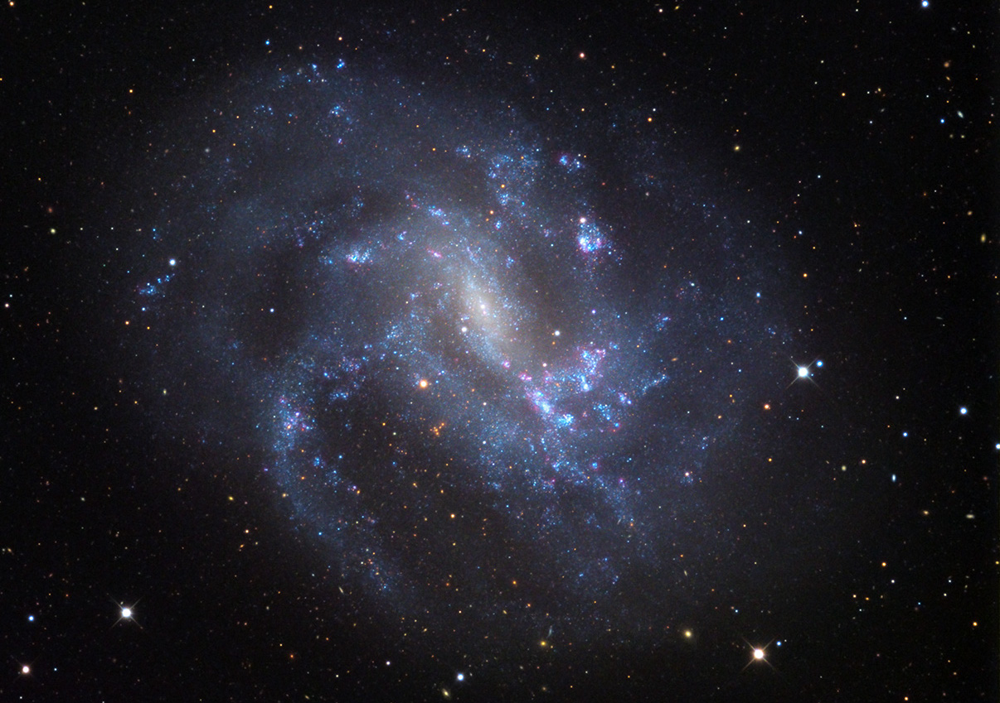
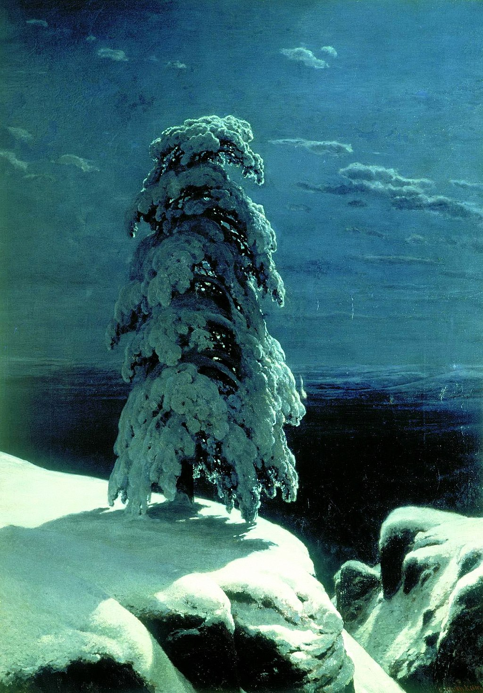

Benjamin CO Martinez
Astrophysics
Hello! My name is Ben Martinez and I am an Astrophsyics student who studies AGN under Ed Moran and EGMF under Michael Kachelriess. I am currently in my third year of undergraduate study at Wesleyan University, and spent one semester at NTNU in Trondheim, Norway. My research interests include the Supermassive Black Holes that exist at the center of galaxies, the cosmological magnetic fields that may or may not exist between galaxies, and the conditions of the early universe.
AGN
Cosmological simulations have shown that the fraction of low-mass galaxies in today’s universe that contain a nuclear black hole is directly related to the mechanism by which massive black hole seeds formed in the early universe. Here, we create an unbiased sample of nearby galaxies, dominated by low-mass "dwarf" galaxies in order to develop an objective picture of black hole-powered activity in today’s universe. From a variety of sources of optical spectroscopic data, including the Sloan Digital Sky Survey (SDSS) and Kitt Peak National Observatory (KPNO), we have determined the redshift (i.e., distance) and physical classification of 310 galaxies within a 256 deg2 region of sky. Using these data, we have separated the objects into four distinct activity classes: quiescent (inactive) galaxies, star- forming galaxies, LINER galaxies, and black hole-powered active galactic nuclei (AGN). This allows us to make a preliminary assessment of the black-hole content in nearby low-mass galaxies, which can ultimately provide insight into the origins of supermassive black holes.
EGMF
Magnetic fields have been detected in galactic clusters, superclusters, and voids of the Large Scale Struc- ture (LSS). It is generally accepted that these astronomical magnetic fields are produced via the amplification of pre-existing magnetic fields, or “seed” fields. Weak, large scale magnetic fields dissipate energy on timescales comparable to the age of the universe, and therefore may conserve the strength gained from the initial amplification process. Amplification processes are driven by dynamos and flux-conserving compression during structural collapse. Although these processes can amplify extant magnetic fields, they cannot produce them on their own, so the seed fields had to be generated via an altogether different mechanism. This mechanism is mysterious, and it must either pre-date the epoch of structural formation or have occurred at its onset.
About
I was born in Miami, Fl, but moved to Connecticut at a very young age. I am a very big fan of this state, so I chose to stay here and study at Wesleyan University for my undergad. I am currently a junior at Wesleyan, where I study astronomy, physics, and religion. I founded and run the WesAstro(& Space) Club along with my good friend and colleauge Gilberto Garcia. In highschool, I founded and ran our own Astronomy club, which continues to operate to this day. As you can probably guess, I am very passionate about Astro and Physics outreach, and take part in our public space nights whenever I can. In the fall of 2019, I travelled to Norway to study and research at the Norwegian University of Science and Technology (NTNU). As I mentioned earlier, I study religion as well as astrophysics, and I am particularly interested in early Christianity and Russian Cosmism. Outside of academics, I enjoy playing music (bass guitar and mandolin, you can find some of my songs here, if you're interested), learning new languages (Spanish, Norwegian, and Swedish), and watching Star Trek (DS9 is my favorite but I like them all).
Resume
My full resume is available here, but here are a few highlights:
Contact
Email: bmartinez@wesleyan.edu
